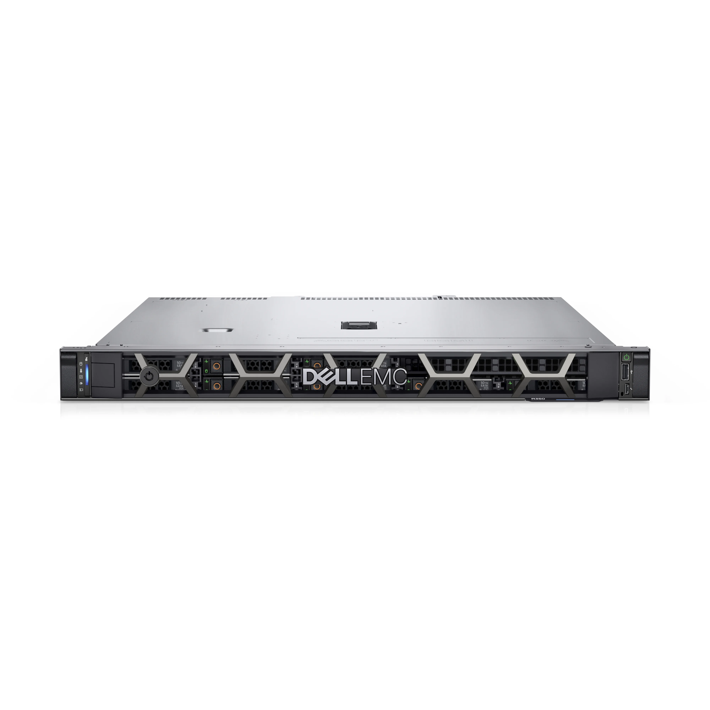

Dell PowerEdge R350
Server Intel Xeon E 2224G 4.7 GHz, Intel UHD Graphics P630, RAM 16GB DDR4, HDD 4 TB 7200 ot/min, DVD, DisplayPort, 6× USB 3.2, 4× USB 2.0, typ skříně: Mini Tower, Bez operačního systému
Dell PowerEdge T40
Vyřešte efektivně a s nízkými náklady potřeby vaší firmy v oblasti správy souborů, tiskových úloh a
poštovních služeb a pořiďte si spolehlivý Server Dell PowerEdge T40. Je vhodný pro plnění základních
firemních funkcí a běžných pracovních úkolů jako jsou například konsolidace a sdílení souborů a aplikací z
více stolních počítačů na jednom místě. Spolehněte se na podporu společnosti Dell s roční zárukou na
hardware s reakcí následující pracovní den, nebo zvolte až 5letou standardní záruku. Volba Dell PowerEdge
T40 je řešení, při kterém budete mít vaše data pod kontrolou přímo na pracovišti a ušetříte případné výdaje
při používání veřejného cloudu.
Klíčové vlastnosti serveru Dell PowerEdge T40
Spolehlivý a cenově výhodný server Dell PowerEdge T40
Ideální zařízení pro sdílení souborů a aplikací z více stolních počítačů
Všechna vaše data pod kontrolou přímo na pracovišti
Prostorově úsporná věžová konstrukce
Připraven na rozšiřování hardwarové kapacity
Bohatá konektorová výbava
Opravu případné závady na místě do druhého pracovního dne (NBD On-Site)
Vysoký výkon a možnosti rozšíření serveru Dell PowerEdge T40
Rozměrově úsporná věžová konstrukce Dell PowerEdge T40 dovolí umístit server prakticky kamkoliv. Procesor
Intel Xeon dodá serveru dostatečný výkon a společně s velkou operační pamětí vám Dell PowerEdge T40 zajistí
plynulý provoz firemních agend. Server je navíc připraven pro postupné navyšování kapacity díky čtyřem
paměťovým slotům DIMM, třem slotům PCIe a jedním PCI, které umožňují rozšiřování konfigurace podle
rostoucích potřeb firmy a vzrůstajících nárocích na paměť a úložiště.
Široké možnosti připojení periferií k serveru Dell PowerEdge T40
PowerEdge T40 poskytuje vysoký počet rozhraní - 4× USB 2.0 6× USB 3.2 pro připojení externích úložišť, myši,
klávesnice a dalších kompatibilních periferií. Přítomný je audio výstup i PS/2 pro starší klávesnici a myš.
Grafický výstup DisplayPort lze použít pro zobrazovací zařízení. Modul TPM 2.0 ochrání hardware a úložiště
bezpečným šifrováním. Server Dell PowerEdge T40 podporuje operační systémy Canonical Ubuntu Server LTS a
Microsoft Windows Server LTSC s technologií Hyper-V.